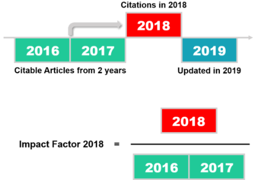

Записник
Головна
Відео
Відділ
Журнали
Контакт Визначення квартилю журналу
Що таке Квартиль
Квартиль - це категорія наукових журналів, що визначається бібліометричними показниками, які відображають рівень цитованості. В результаті ранжування журнал потрапляє в один з чотирьох квартилей: Q1 (найвищий, TOP10) Q2 (TOP25), Q3 (TOP50), Q4 (найнижчий).
Для визначення квартиля журналу використовуються наступні показники:
- імпакт-фактор (IF) Journal Citation Reports (JCR) - для бази данных Web of Science (WoS);
- ранг SCImago (SCImago Journal Rank, SJR) - для базы данных Scopus.
Визначення імпакт-фактору

Визначення квартиля за імпакт-фактором IF в Journal Citation Reports (Web of Science)
На сайті www.webofknowledge.com в розділі «Основний
пошук» провести пошук за назвою журналу (вибрати Назва видання). Вибрати статтю за потрібний рік, в її описі відкрити меню Подивитись Impact Factor журналу - буде вказано тематична категорія JCR та квартиль в категорії. Також в платній версії можна скористатися інструментом Journal Citation Reports. Безкоштовна альтернатива academic-accelerator.com
Визначення квартиля за показником SJR в SCImago Journal Rank (Scopus)
На сайті www.scimagojr.com в рядку пошуку ввести повну назву журналу, натиснути кнопку Search. Вибрати потрібний. У профілі журналу вказані його тематичні категорії з відповідними квартилями. Також можна вивести переліки журналів за Квартилями цілком або за предметною областю (натиснути Journal Rankings). У полях All subject areas і All subject categories вибирати потрібну і натиснути Apply.
Наступна Copyright © 2020 ІЗНХ НАНУ | Створив Олег В'юнов